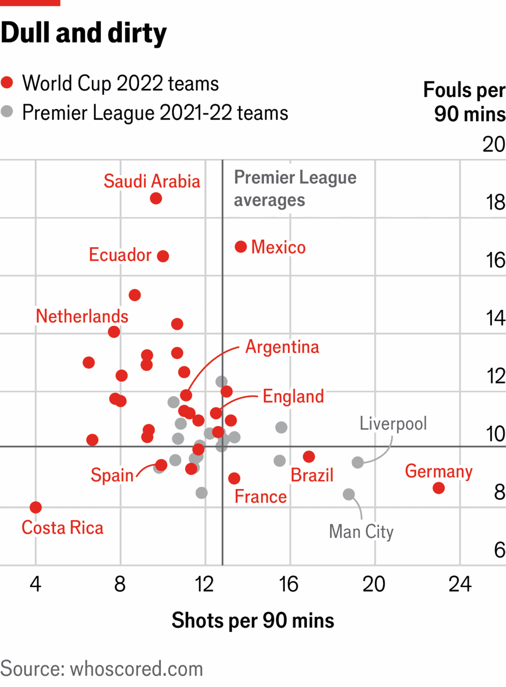

Why the World Cup produces an ugly version of the beautiful game
FIFA could emulate other sports by tweaking rules to generate more excitement
June 4th 2026

DURING THIS year’s World Cup, three outcomes are guaranteed. First, fans of one country will experience nirvana, while those in 47 others (up from 31 previously) will be heartbroken. Second, there will be moments of everlasting genius and infamy. There could be a goal as mesmerising as Diego Maradona’s solo dribble against England, a touch as sumptuous as Johan Cruyff’s turn against Sweden or a save as improbable as Gordon Banks’s against Pelé; a penalty miss as agonising as Roberto Baggio’s against Brazil, a handball as blatant as Luis Suárez’s against Ghana or a headbutt as shocking as Zinedine Zidane’s against Italy.
The third certainty is plenty of stodgy matches which few people remember fondly. That is because the World Cup—for all the fervour about sweepstakes, sticker albums and occasional screamers—typically produces an ugly version of the beautiful game. One way to measure this is in goals: in the past three editions, there have been only 2.6 per game in normal time, falling to just 2.3 in the quarter-finals, semi-finals and final. During that time, the rate in the English Premier League, the world’s richest domestic competition, has been 2.8. Notably, the moments of brilliance and ignominy mentioned above happened in otherwise cagey games. In only one did a team score multiple goals, and that was because Maradona punched one in with the “Hand of God”.

This attritional nature shows up in other statistics. Compared with the preceding season of the Premier League, the last World Cup had 16% fewer shots per 90 minutes and 17% more fouls. One match featured 18 yellow cards and a red. This is partly because players are exhausted after an extended campaign. (The heatwaves expected in the upcoming matches will not help.) They also rarely train with international teammates, causing disjointed play. Tension is a factor, too, as eternal glory looms.
Another reason for humdrum football is that, for middle- and lower-tier countries, it works. Since the World Cup expanded to 32 teams in 1998, six ranked outside the top third by bookmakers have reached the semi-finals: Croatia (1998 and 2022), South Korea (2002), Turkey (2002), Uruguay (2010) and Morocco (2022). Their runs to the semis had an average score of 1.1 versus 0.7 in normal time. New Zealand, ranked last by bookies in 2010, were the only unbeaten team that year, scoring twice across three draws. Put simply, for countries outside the elite, it pays to “park the bus” and pray—a logic that will apply even more strongly with 48 teams. There might be more goals in group-stage drubbings, but also more Davids hacking down Goliath in the knockouts.
The possibility of winning the World Cup is so intoxicating that every game could be scoreless and billions would still watch. But football is competing in a global market for eyeballs, in which the governing bodies of other sports are trying to make their “product” more appealing. Sometimes that means making matches snappier, as Major League Baseball has done by introducing a 15-second limit for pitchers. Often it means making them higher-scoring, as both codes of rugby have done by refereeing the “ruck” more favourably to the attack, and the Indian Premier League has in cricket by adding a 12th “impact player”. Meanwhile, Formula One has increased unpredictability by changing several rules for constructors: this season Lewis Hamilton and Max Verstappen, champions in ten of the past 12 seasons, have yet to win a race.
There is a long history of administrators making such tweaks. America’s National Basketball Association introduced a shot clock to force more attacking play in the 1950s, when matches averaged 160 points (it is now 230). But today the rate of experimentation is accelerating, amid fears that broadcast deals have peaked and that younger audiences are watching more highlights and fewer matches. In truth, teams in most sports play conservatively in play-offs, so organisers who do not innovate are risking an anti-climax as other leagues reach a crescendo. Some governing bodies even use external analysts to model how changes in gameplay and the behaviour of fans might affect their businesses.
Football has historically been less open to this. The laws are largely untouched from 30 years ago—with changes few in number and mostly minor—though they are enforced more strictly: today you’ll get a red card for raking someone’s shin, with the video assistant referee (VAR) adding extra scrutiny to every decision. Recently, however, FIFA, world football’s governing body, has realised that it too might need to innovate, to maintain the sport’s share of the attention economy—and, perhaps, to grow it in America, which will host 78 of this year’s 104 matches. Arsène Wenger, a venerated former manager who now works for FIFA, has suggested relaxing the offside law to apply only when there is “clear daylight” between the attacker and defender. This is being trialled in the Canadian league. The idea is to reinstate many goals that are currently being chalked off by VAR (though officials will still have to draw a line somewhere, so the debate over whether someone’s shoelace was offside will never end).
Given how much fans dislike VAR—in a recent survey of British fans, 72% said it makes watching football less enjoyable—fixing it ought to be top of FIFA’s agenda. Using it solely when teams make “challenges”, with each given a limited number, as is common in other sports, should mean that only howlers get checked, while shifting some blame to the teams if something gets missed. That change, in tandem with Mr Wenger’s offside tweak, could mean more goals and fewer refereeing delays. For fans in the 47 eliminated countries that won’t lift the World Cup trophy, that would be a victory to celebrate. ■
James Tozer is a co-founder of Prospect, a sports analytics firm that works with governing bodies, teams, coaches and others. He was a data journalist with The Economist from 2014 to 2022.